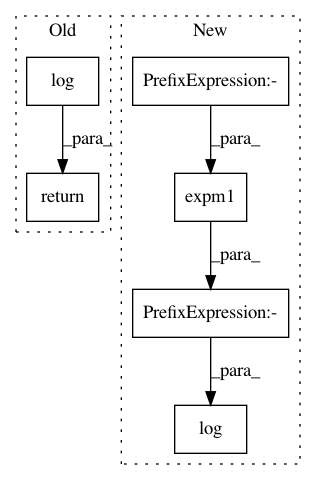

823906a3efcf66897eac8a4c89052d9153bca49e,pymc3/math.py,,log1mexp_numpy,#Any#,240
Before Change
For details, see
https://cran.r-project.org/web/packages/Rmpfr/vignettes/log1mexp-note.pdf
return np.where(x < 0.6931471805599453, np.log(-np.expm1(-x)), np.log1p(-np.exp(-x)))
def flatten_list(tensors):
return tt.concatenate([var.ravel() for var in tensors])
After Change
x = np.asarray(x)
out = np.empty_like(x)
mask = x < 0.6931471805599453 // log(2)
out[mask] = np.log(-np.expm1(-x[mask]))
mask = ~mask
out[mask] = np.log1p(-np.exp(-x[mask]))
return out
In pattern: SUPERPATTERN
Frequency: 3
Non-data size: 6
Instances
Project Name: pymc-devs/pymc3
Commit Name: 823906a3efcf66897eac8a4c89052d9153bca49e
Time: 2021-01-22
Author: 28983449+ricardoV94@users.noreply.github.com
File Name: pymc3/math.py
Class Name:
Method Name: log1mexp_numpy
Project Name: GPflow/GPflow
Commit Name: 456b9ed099cc5f7e99880371ac9d1924095769f3
Time: 2017-05-26
Author: joachim.vanderherten@ugent.be
File Name: GPflow/transforms.py
Class Name: Log1pe
Method Name: backward
Project Name: cornellius-gp/gpytorch
Commit Name: 556f82a5aea9383d4ac43ac338b415c092952071
Time: 2019-07-06
Author: kaw293@cornell.edu
File Name: gpytorch/utils/transforms.py
Class Name:
Method Name: inv_softplus